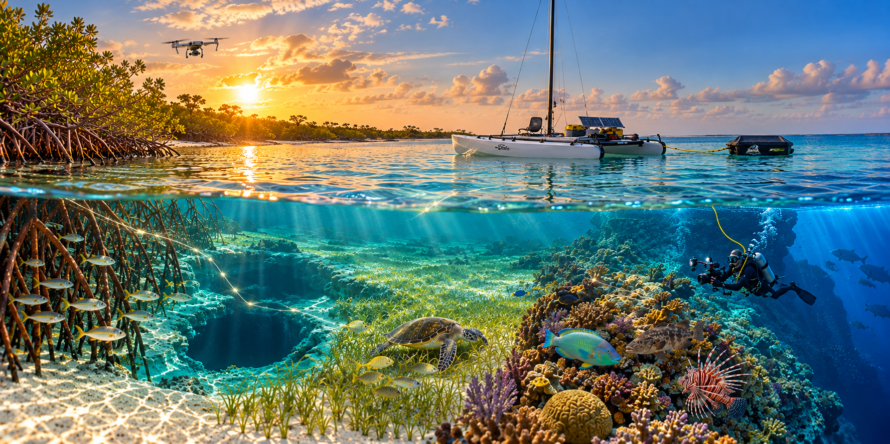
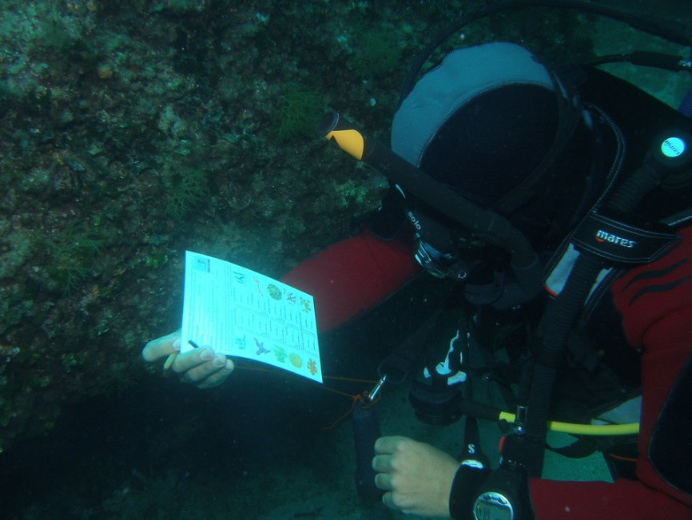
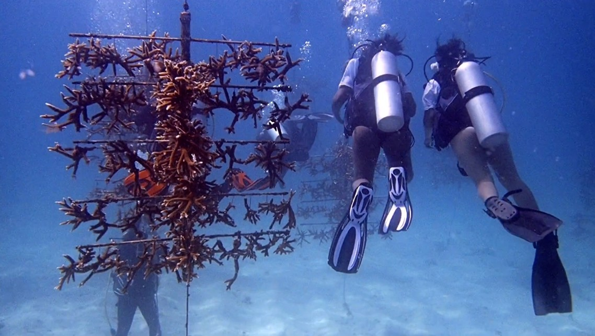
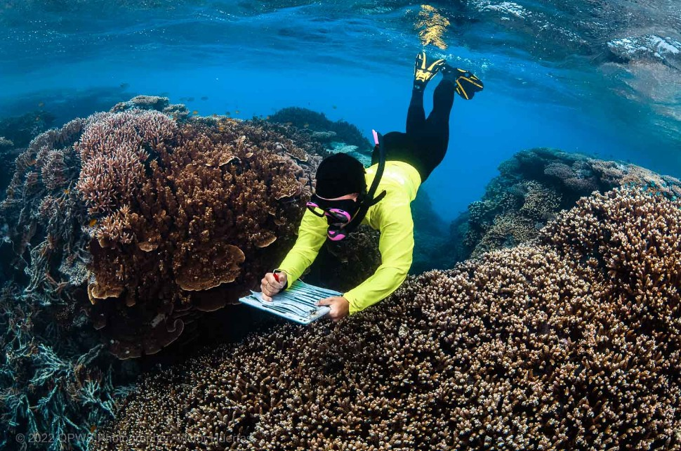
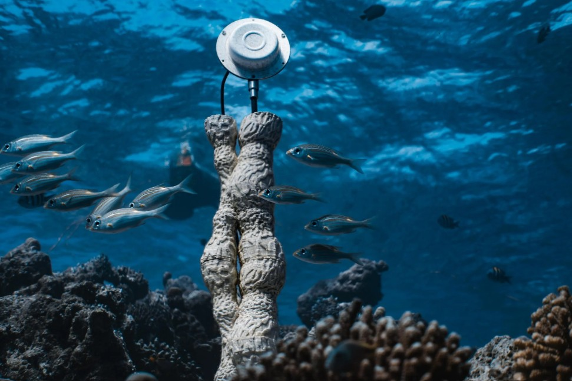
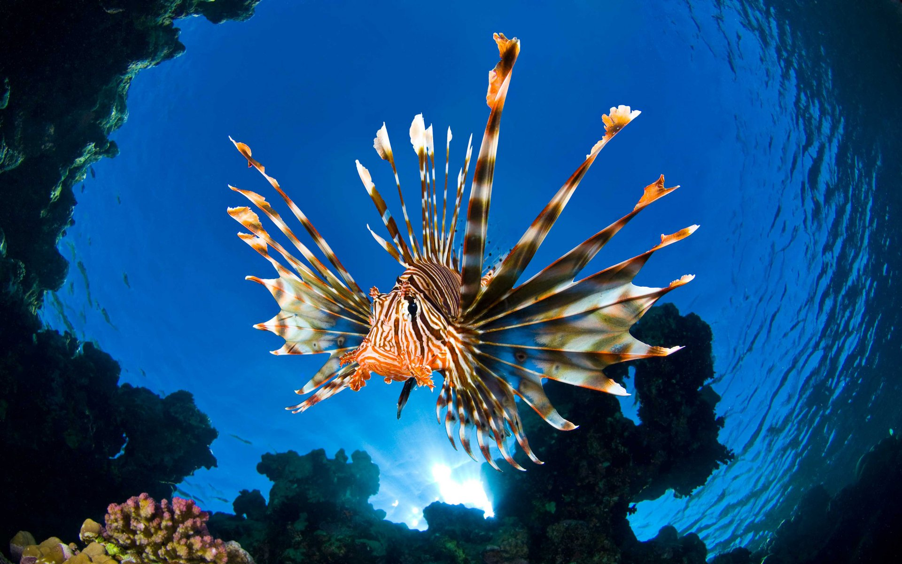
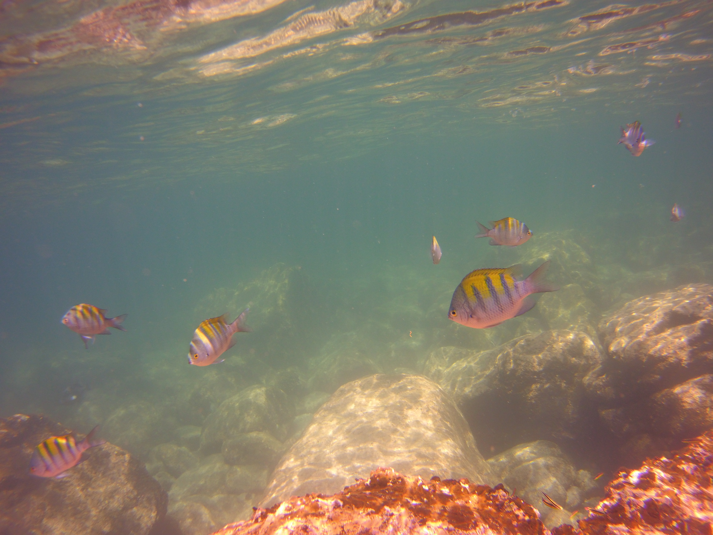
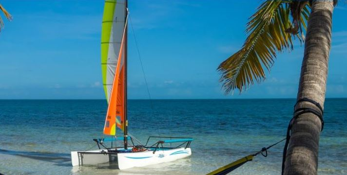

The Bahamas • The Caribbean • U.S. Pacific & Atlantic Coasts
Planned multi-month field work in shallow water most research vessels can't reach — collecting reef, seagrass, mangrove, and water-quality data to support the research teams already working these waters.

Mangrove • Blue hole & tidal creek • Seagrass • Coral reef • Marine life — five connected habitats, one field platform



Shamrocket draws 24 inches. She works inside the reef line, up the mangrove creeks, over the seagrass flats, and onto the beaches of uninhabited cays. She carries no fuel and runs on wind and solar, so she can stay on station for months — not days — without returning to port.
That is the planned core of GROAN™ in the Bahamas: a sustained, low-impact field presence in the shallow places that are hardest and most expensive to survey, with repeat visits to the same sites season after season.
Bahamian reefs don't exist on their own. They depend on the seagrass, the mangroves, the tidal creeks, and the animals that move between them. The planned Bahamas work follows all five.
Planned: coral condition, bleaching and reef health at shallow sites, with repeat visits each season.
The nursery beds and feeding grounds that link the shoreline to the reef.
The creeks and shorelines that shelter juvenile fish and hold the coast together.
Turtles, rays, reef fish — and invasive lionfish, logged and removed.
Tidal creeks, blue holes, and brackish water where land and sea meet.
Each site is planned to have a position and a record. Dive and snorkel sites, anchorages, uninhabited cays, and hurricane holes would be logged with their coordinates, conditions, and water-quality readings, and revisited each season so change can be seen over time.
Hurricane-hole records, verified in person on the Bahamas and U.S. coasts, are planned for release to mariners once verification is complete.
GROAN™ is a proposed platform. Bahamas field work is in planning. Forecasting and intervention effectiveness have not yet been validated, and no forecast skill has been demonstrated.
In the Water



Marine Observation and Operations Platform: the boat, the instruments, and the person operating them, all working from the water.

Shamrocket · 24" Draft · No Fuel Aboard
For roughly three decades, Dan Roe built clinical decision support systems for healthcare networks — taking messy, real-world data and turning it into decisions people could act on. GROAN™ applies that same discipline to the ocean.
Before that: U.S. Navy nuclear submarine electronics technician, Army combat medic and cavalry scout. Today: USCG 200-Ton Master, FAA Part 107 drone pilot, PADI Advanced Open Water diver, and a sailing instructor for more than twenty years. MBA, George Washington University. MS in Health Informatics, University of Tennessee Health Science Center.
The GROAN™ Platform White Paper describes the proposed decision-support platform. Reading it requires agreeing to the terms of use shown on the access page.
Read the white paperGROAN™ is designed to support the research teams already working in the Bahamas, the Caribbean, and the U.S. Pacific and Atlantic coasts — not to compete with them. If your team could use a shallow-water platform, a trained operator, and a sustained presence at your sites, let's talk.
A full research prospectus is available to research organizations on request.
nevadoraiders@gmail.com